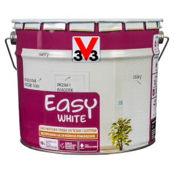

Farby Easy White to farba przeznaczona do malowania ścian, sufitów, drewna a także innych powierzchni wewnątrz pomieszczeń takich jak grzejniki kaloryfery stolarka drzwiowa i okienna. Posiada doskonałą przyczepność na stare
podłoża bez potrzeby stosowania farby podkładowej. Siła krycia to 98% dla jednej warstwy.
Kremowa konsystencja sprawia, iż farba jest prosta w użyciu, łatwa w aplikacji i nie pozostawia smug. Jest odporna na szorowanie nie żółknąca. W przypadku cielnego lub intensywnego podłoża po wyschnięciu może być
konieczność nałożenia drugiej warstwy.
Faba do wnętrz - biała (Easy White)


CENY:
1l/50 zł
5l/100 zł
10l/150 zł
Kolory

Biały
Właściwości i przeznaczenie
Wykończenie: MAT
Czas między warstwami: 4 H
Wydajność: 10m2
Pojemność: 1L, 5L, 10L
Czyszczenie narzedzi: WODA
Zastosowanie
Przygotowanie podłoża
Na podłożach nowych, niemalowanych, zastosować odpowiednią warstwę podkładową w celu uzyskania optymalnego i najbardziej ekonomicznego rezultatu.
Należy przestrzegać poniższych zaleceń:
-
Płyty g-k:
powierzchnię odkurzyć i nałożyć odpowiednią warstwę podkładową -
Drewno oraz pochodne:
delikatnie przeszlifować papierem ściernym i odkurzyć -
Drewno egzotyczne:
odtłuścić oraz nałożyć odpowiednią warstwę podkładową -
Świeże tynki:
przed pomalowaniem odczekać 3 miesiące do całkowitego wyschnięcia. Delikatnie przeszlifować papierem ściernym i odkurzyć (nie nakładać na podłogę). Pierwszą warstwę rozcieńczyć dodając 10% wody, drugą warstwę pomalować bez rozcieńczania -
Pomalowane kaloryfery i grzejniki metalowe, aluminiowe i żeliwne oraz niewielkie powierzchnie plastikowe:
dokładnie umyć i odtłuścić, a po wyschnięciu przeszlifować papierem ściernym (240) i odpylić. -
Surowy metal:
nałożyć odpowiedni podkład. -
Stare farby:
dokładnie umyć i odtłuścić, a po wyschnięciu przeszlifować papierem ściernym (120) i odpylić. -
Tapeta oraz płótno:
pierwszą warstwę rozcieńczyć dodając 10% wody, drugą warstwę pomalować bez rozcieńczania. Przed malowaniem należy wykonać próbę na niewielkiej powierzchni. -
Plamy oraz zacieki:
dokładnie umyć i odtłuścić, a po wyschnięciu użyć specjalnego środka.
Porady
- Nie należy przerywać pracy na środku malowanej powierzchni, ani nanosić poprawek podczas wysychania farby, ponieważ spowoduje to pozostawienie śladów.
- W przypadku ciemnego lub intensywnego podłoża, po wyschnięciu może być konieczne nałożenie drugiej warstwy farby.
- Przed i w trakcie malowania kaloryfery muszą być zimne.
- Przed malowaniem zalecamy wykonać próbę na niewielkiej powierzchni.
- Opakowanie łatwe do ponownego otwarcia, jeżeli wieczko każdorazowo zostanie oczyszczone przed zamknięciem
Aplikacja
Przed malowaniem Białą matową farbę do wnętrz Easy White 3V3 należy dokładnie wymieszać za pomocą mieszadła do farb sięgając aż do dna pojemnika, w celu uzyskania jednorodnej konsystencji.
- Rozpocząć od malowania narożników za pomocą pędzla, a następnie pomalować płaskie powierzchnie wałkiem.
- Nasączyć wałek równomiernie farbą. Podczas malowania nie należy zbyt mocno dociskać wałka. Nanosić starannie i równomiernie taką samą ilość farby na podobną powierzchnię. Powierzchnię należy malować etapami (0,5m2-1m2).
- Zalecane są dwie warstwy farby.
- Ostatnie pociągnięcie wałkiem należy wykonywać w jednym kierunku, z góry na dół.
- Stosować w temperaturze pomieszczenia 12 – 25° C. Farba gotowa do użycia, nie rozcieńczać